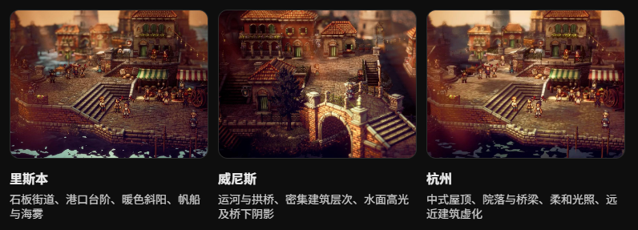
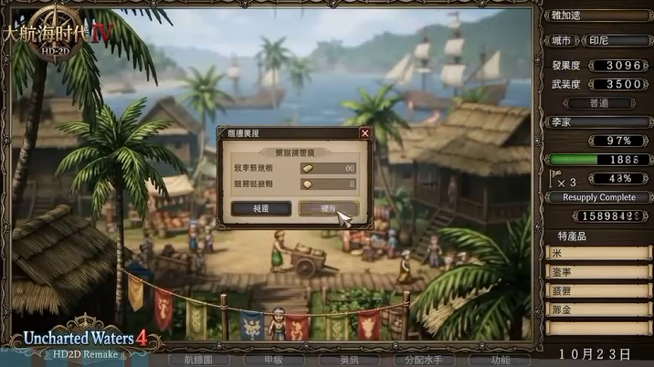
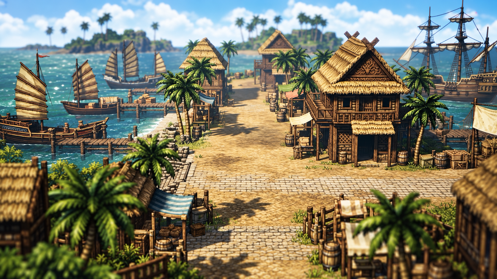
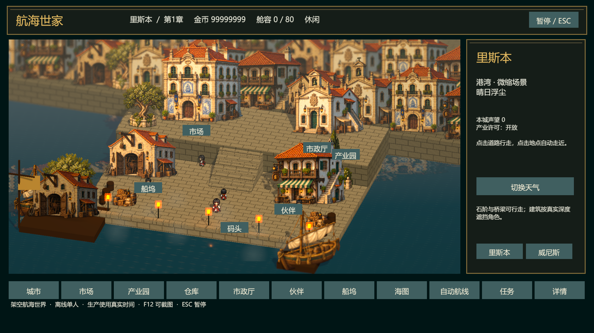
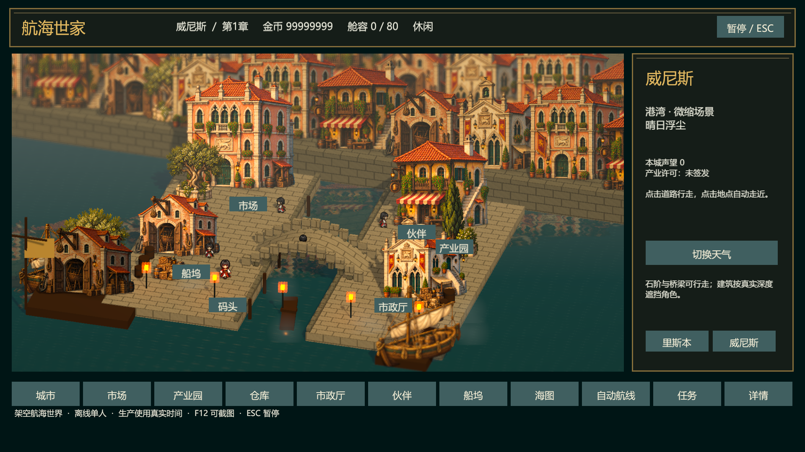
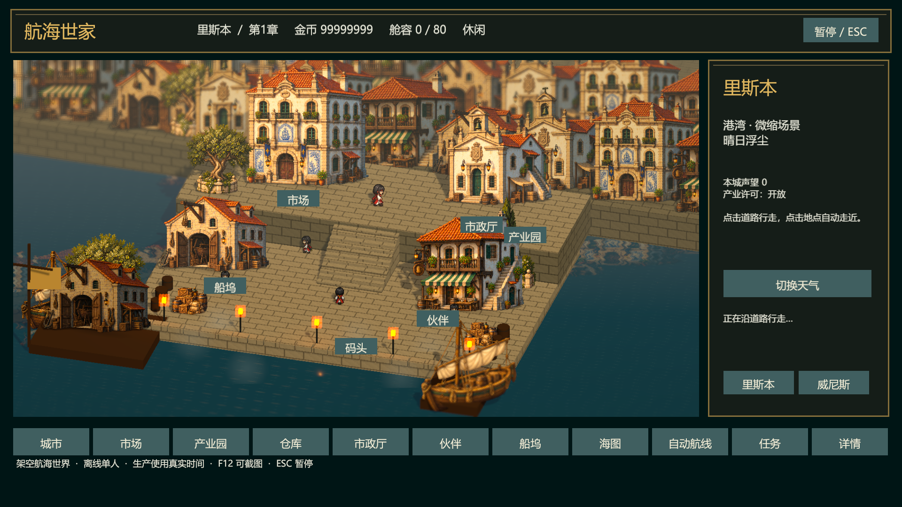
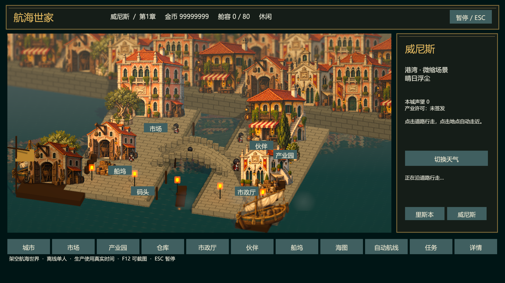
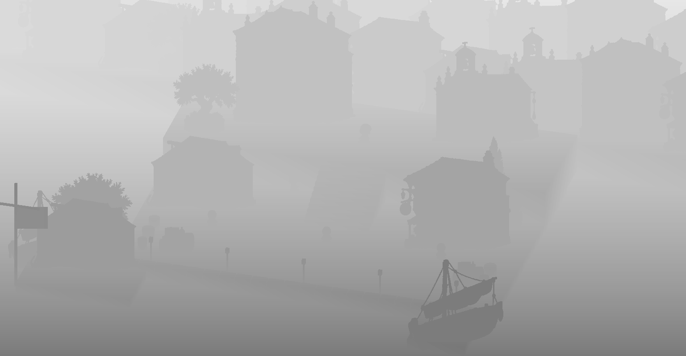
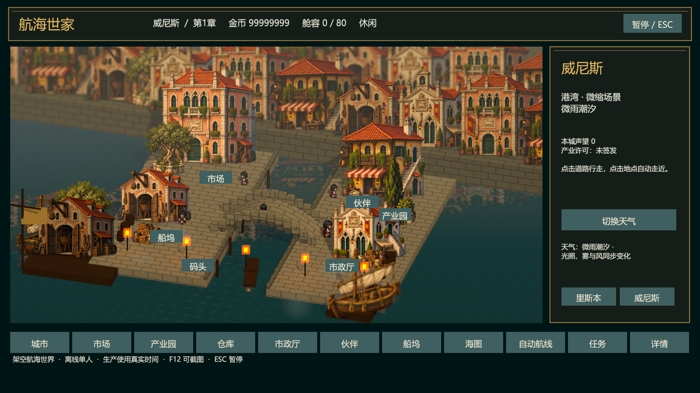

以下两城为 Windows Unity Player 实际渲染，由运行测试输出。参考图仅说明方向，不是游戏截图。城市画面可行走、有真实台阶/桥面、深度遮挡、景深和天气。




白石蓝瓷建筑、红瓦、双层码头和宽石阶；中心行走区域清晰。

同一画风的赭红立面、运河、拱桥和水面倒影。




入口：Unity 菜单 Maritime Legend → City Art → Preview Lisbon / Preview Venice。仅两城精修；杭州与其他五城未扩展。人物完整模板的脸型/发型动画尚未齐备；当前共享角色动画并关联服装颜色。